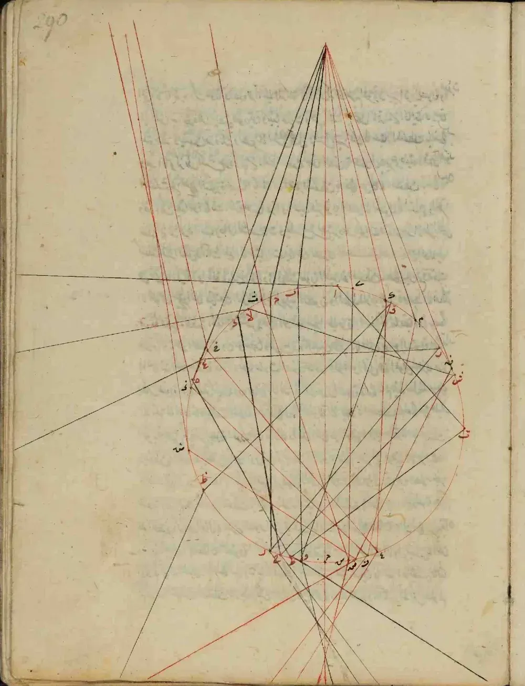
SakaryaTARİH BELİRLENECEK
TEKNOLOJİ BAŞKALDIRISI
Anti-Siyonizm Hackathonu
Çok temalı anti-siyonist fikir ve proje üretim yarışması. Tıp, hukuk, medya ve yazılımdan takımlar iki günde fikrini çalışan bir örneğe çevirir.
- gün
- 2
- tema
- 5
- ölçüt
- 4
- jüri
- 1
Çerçeve
Gazze'yi merkeze almak, mutlak özgürlük ve hürriyet arayışıdır.
Tıkanmış meseleleri yeniden aynı yöntemlerle ele almakla yeni çözümler beklenemez. Meseleyi tıkayan şey biraz da budur. Bazı iyi fikirler; yeni yöntemlerin eski meselelere uygulandığı, farklı bağlamlarda olan iki ayrık fikrin bir araya getirilmesiyle gerçekleşmiştir çoğu zaman.
Böyle bir atılım modern yöntemleri tersten bir biçimde uygulamayı zorunlu koşar. Bu hareket hem Anti-Siyonizm Kongresi'nin Türkiye'ye yaydığı geniş zeminde üniversite düzeyinde bir “fikirler” atılımı için hem Kongre'ye öncü bir hareket olarak vardır.
Çerçevenin tamamını okuArkada: Memlûk Kur'an tezhibi · 1370'ler
Eserler: astronomi, tıp ve cebir yazmaları
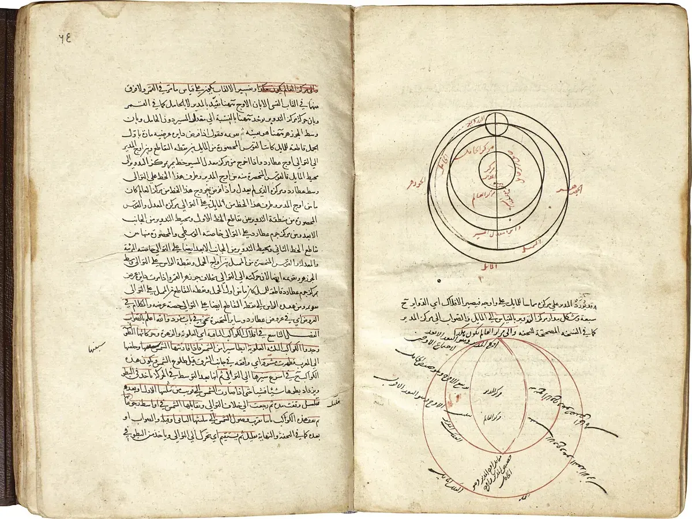
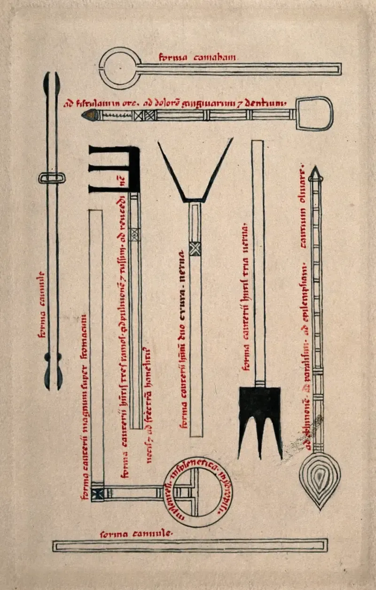
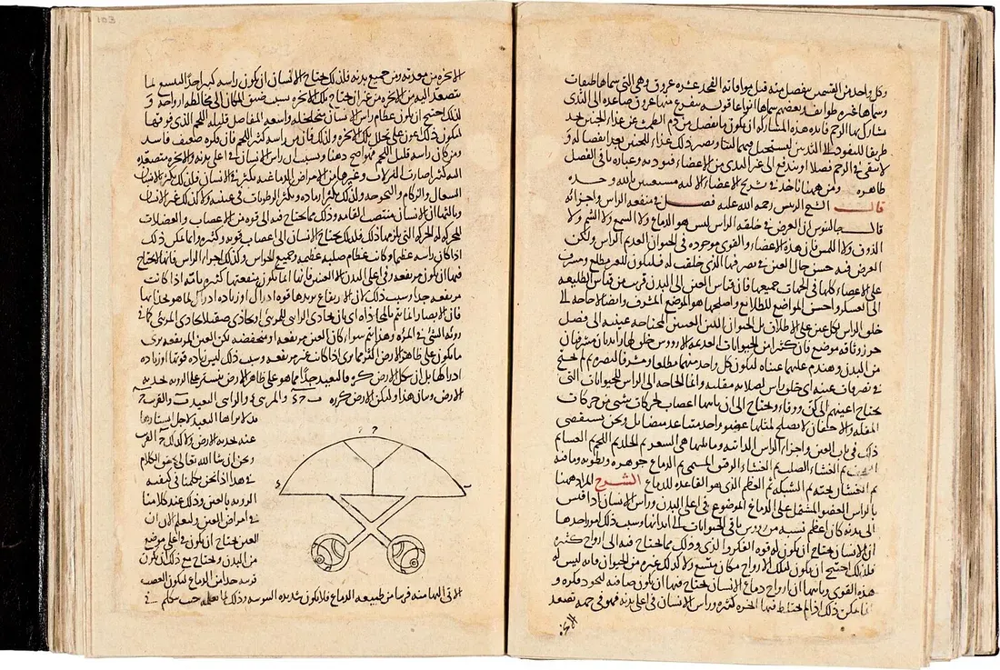
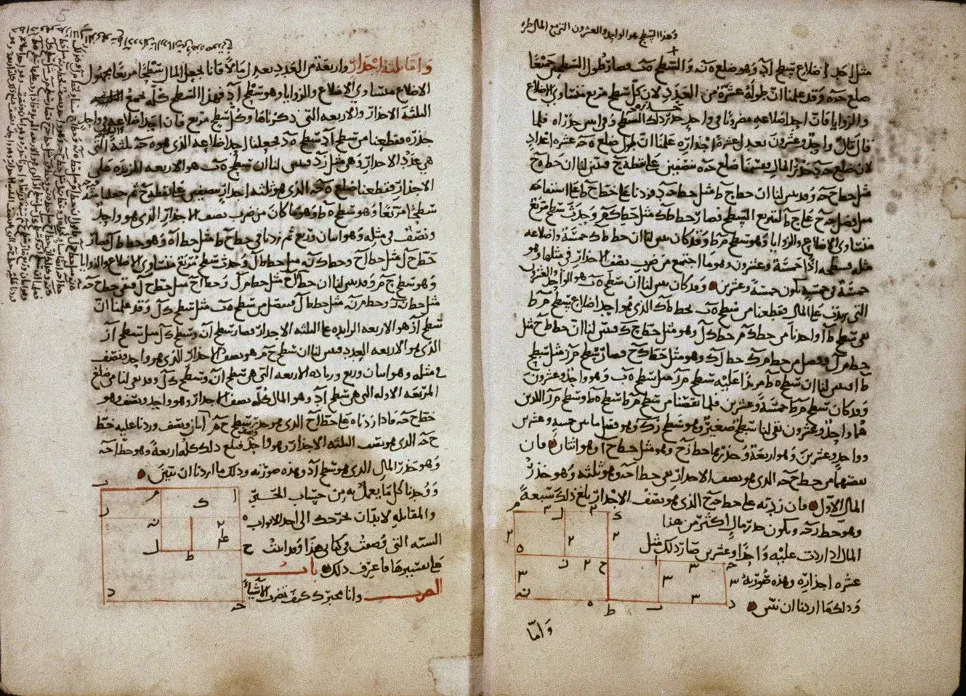
- 01Cürcânî · Şerhu't-Tezkire · 1410
- 02Zehrâvî · cerrahi aletler
- 03İbnü'n-Nefîs · Kânûn şerhi · 1334
- 04Hârizmî · Cebir ve Mukabele
Özneleştirme formülünün zorunlu başlıkları
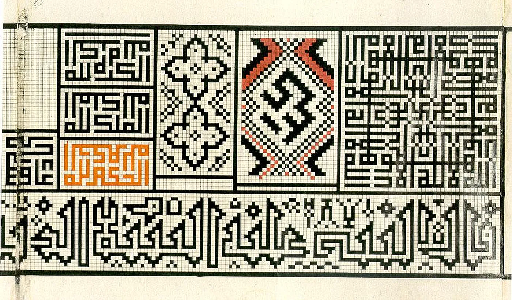
Hareketin karizması ve Müslüman özgüveni
Kendilerine ait olmayan modern zamanın içerisinde yaşayan Müslümanlar, yenilginin teolojisinde, kolektif bilinçdışılarında tarihin üzüntüsünü ve “ezikliği” deneyimlemektedirler. Bu yüzden hareketin yeni bir dil ve Müslüman özgüvenine kaynaklık edecek bir hazne inşa etmesi gerekir. Bunu da İslam inancını özgün haliyle, modern biçimler üzerinden dışavurmak yoluyla yapması gerekir.
Karizmatik figürler
Gazze, sistem-karşıtıdır. İntifada, dünya sistemine karşı bir ayaklanmadır. Küresel intifadanın bazı figürlerini çağırmak, öncü hareketin gereksindiği bir unsur olacaktır. Bu, küresel intifadanın gücünden yerel intifadaya bir güç kesbedebilmek içindir.
Hackathon
Hareket; program öncesi, program esnası ve sonrasında; tıp, hukuk, medya, teknoloji ve sair birçok alanda yeni anti-siyonist temalı fikirler ve projeler için bir kuluçka merkezi olacaktır. Bu, hem paydaş ağı, diyalog ve fikir üretme zemini olarak devam edecek; üniversitede öğrenciler yoğun bir biçimde fikir üretip sunacaklar.
Temalar ve yarışma yapısı
Hackathon tek bir yarışma çatısı altında, birden çok temada anti-siyonist fikir ve proje üretimini hedefler. Takımlar tek bir başlığa bağlı kalmak zorunda değildir; disiplinler arası takımlar teşvik edilir.
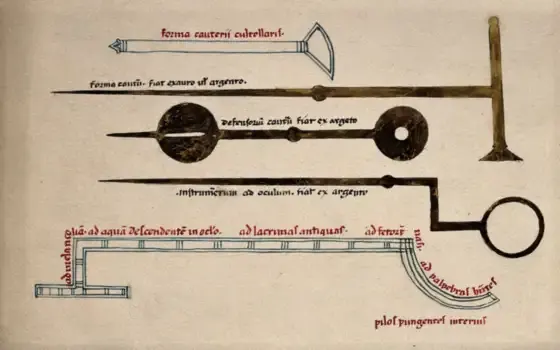
Zehrâvî · cerrahi aletler Tıp ve sağlık
Kuşatma ve abluka koşullarında dayanıklı sağlık çözümleri, açık kaynaklı tıbbi araçlar.
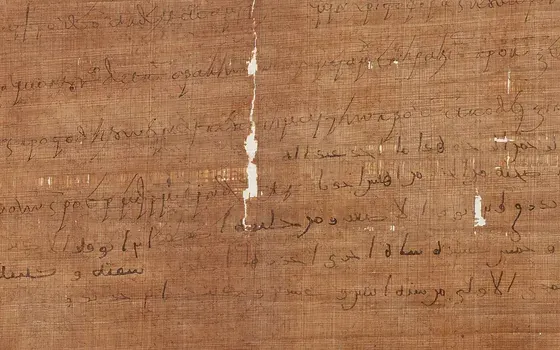
Arapça papirüs · 643 Hukuk
Belgeleme, hesap verebilirlik, soykırım ve işgal karşıtı hukuki araçlar.
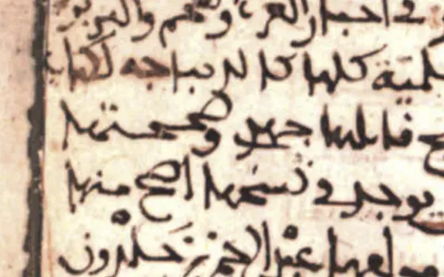
İbn Haldun · el yazısı Medya
Anlatı egemenliğine karşı içerik, doğrulama ve yayın araçları.
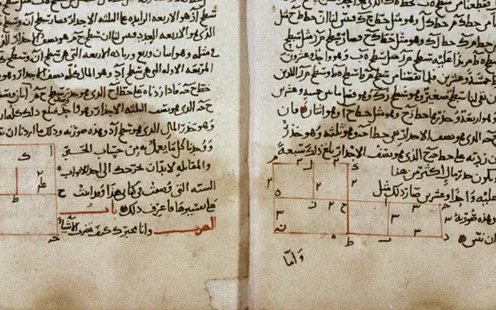
Hârizmî · Cebir Teknoloji ve yazılım
Boykot ve ikame altyapıları, açık kaynak alternatifler, dayanışma platformları.
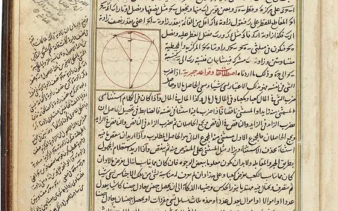
Kâşî ve Kadızâde · 1560 Ve sair
Eğitim, iktisat, tasarım ve ilgili her alandan teklifler.
Bütün başlıklar tek bir jüri ve tek bir ölçüt seti altında değerlendirilir.
Eserler: Kûfî, daire, mukarnas
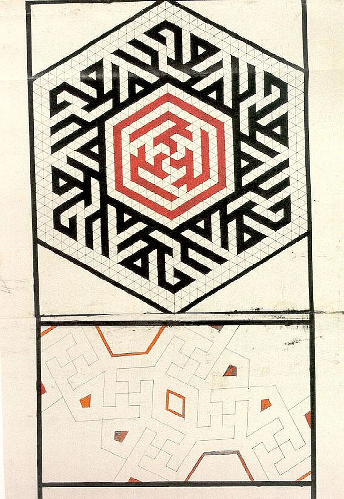
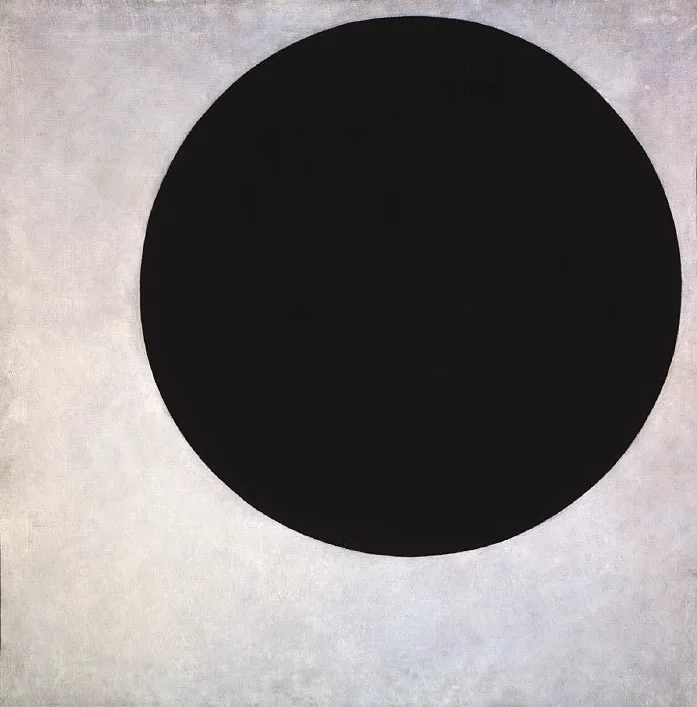
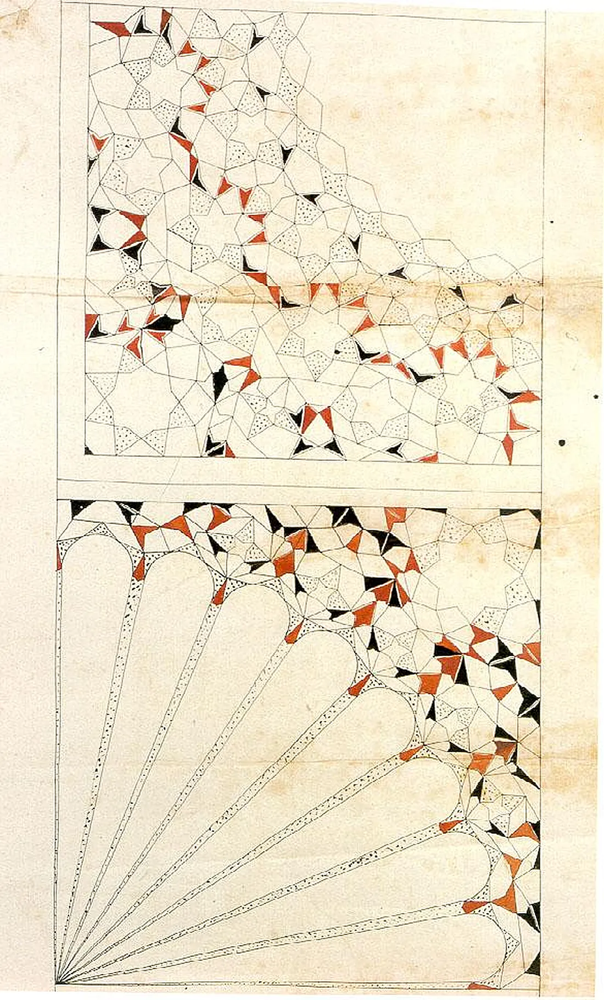
- 05Topkapı tomarı · altıgen Kûfî · 15. yy
- 06Maleviç · Siyah Daire · 1920'ler
- 07Topkapı tomarı · mukarnas · 15. yy
Değerlendirme ölçütleri
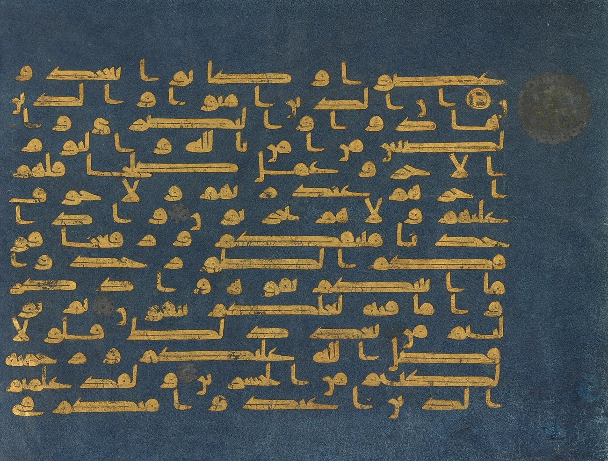
- Etki ve toplumsal anlamlılık
- Özgünlük ve yenilik
- Uygulanabilirlik ve alan/teknik yetkinliği
- Sunum ve anlatım netliği
İki günlük program
Program her iki gün de saat 10.00'da başlar. Öğleden önceki bölümler konferans ve söyleşilere, öğleden sonraki bölümler hackathon çalışmasına ayrılmıştır. Etkinlik ikinci gün saat 17.00'de ödül töreniyle sona erer.
1. gün Cumartesi
- Kayıt ve karşılama
- Açılış ve tanıtım: program akışı, kurallar, jüri ölçütleri, temalar
- Açılış konferansı: söyleşi ve soru-cevap konuşmacı duyurulacak
- Öğle arası
- Tema tanıtımları ve takım kurma
- Hackathon başlangıcı: yapım süreci başlar
- Mentor turları (teknik ve alan uzmanları)
- Akşam yemeği
- Yapım süreci, 24.00'e kadar (gece çalışması isteğe bağlı)
2. gün Pazar
- Kahvaltı ve karşılama
- Konferans: söyleşi ve soru-cevap konuşmacı duyurulacak
- Panel ve sohbet oturumu: davetli konuşmacılar, alan mentorları
- Öğle arası
- Hackathon devamı ve ara değerlendirme
- Kod dondurma ve son teslim
- Demo ve sunumlar: takım başına 4 dk sunum, 2 dk soru-cevap
- Jüri değerlendirmesi
- Ödül töreni ve kapanış
Arkada: Topkapı tomarı · girih çizimi · 15. yy
Konuşmacılar ve mentorlar
Adlar kesinleştikçe burada ve bültende duyurulur.
Açılış konuşmacısı
1. gün, 11.00
Konferans konuşmacısı
2. gün, 10.00
Panel konukları
2. gün, 11.30
Alan mentorları
Tıp, hukuk, medya, yazılım